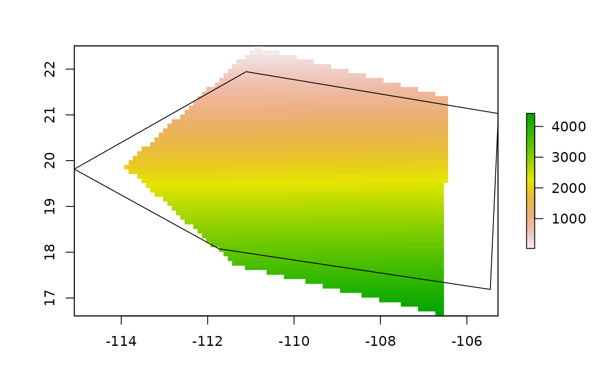

shape2Grid creates a raster grid given a spatial polygon and a grid resolution.
Examples
x_coord <- c(-106.5699, -111.3737,-113.9332, -110.8913, -106.4262, -106.5699)
y_coord <- c(16.62661, 17.72373, 19.87618, 22.50763, 21.37728, 16.62661)
xy <- cbind(x_coord, y_coord)
p <- sp::Polygon(xy)
ps <- sp::Polygons(list(p),1)
sps <- sp::SpatialPolygons(list(ps))
r1 <- bamm::shape2Grid(sps,resolution = 0.1,ones = FALSE)
plot(r1)
sp::plot(sps,add=TRUE)
